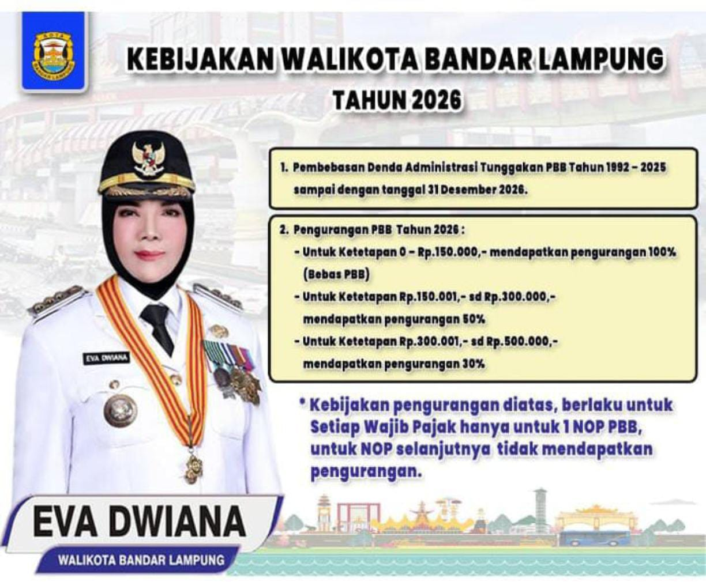
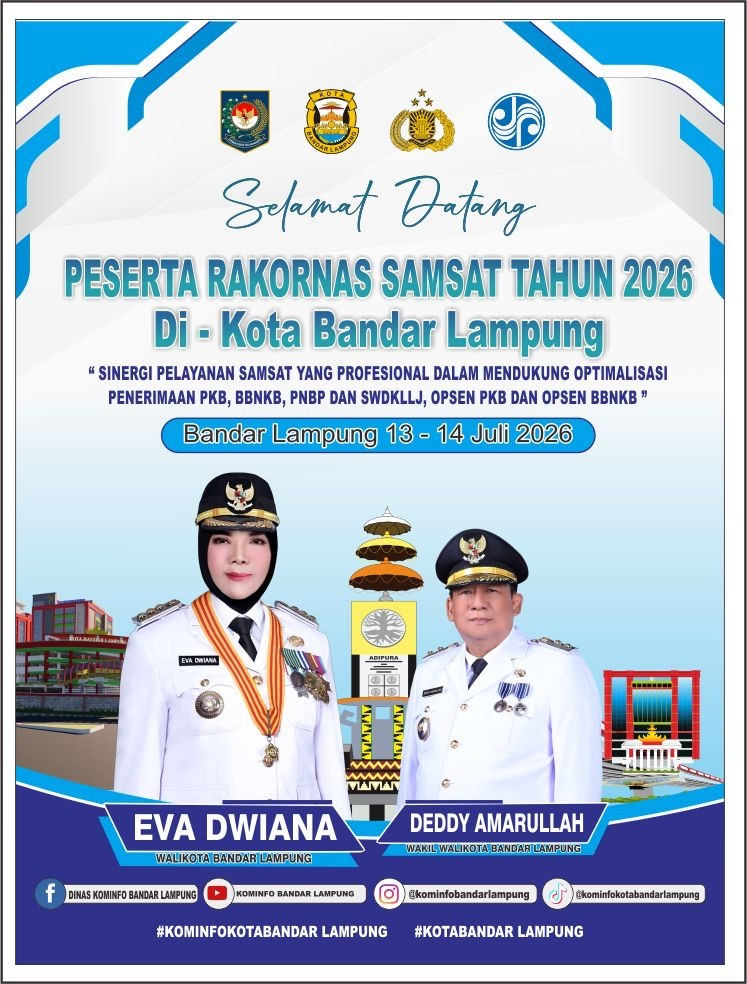
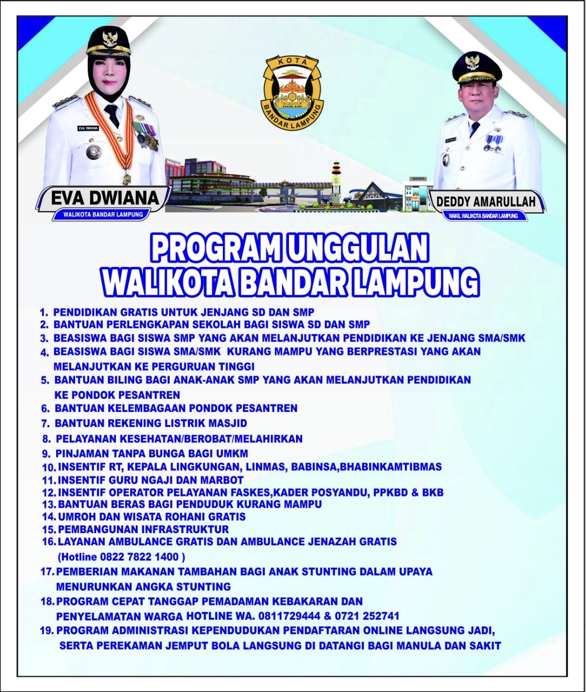
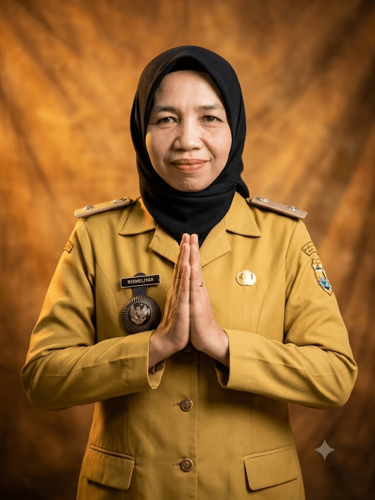

Mengenal Lebih Dekat
Profil Kelurahan Sawah Lama
Letak Geografis
Kelurahan Sawah Lama memiliki luas 20,5h, berada di titik strategis dengan batas-batas tata ruang administratif yang terhubung langsung dengan pusat aktivitas masyarakat.



Susunan Organisasi Pemerintahan
Struktur kepemimpinan dan aparatur Kelurahan Sawah Lama.

Rismeliyar,S.E.
Lurah
Serda Ngadirin
Babinsa
Achmad Eky Kurniawan,S.E.,M.M.
Seklur
Aipda Budi Hermanto
Bhabinkamtibmas

[-]
Kasi Pemerintahan

[-]
Staf Pemerintahan
Daswir,S.E.
Kasi Trantib
Edo Saputra
Staf Trantib

[-]
Kasi Pelayanan & Kesra

[-]
Staf Pelayanan
Struktur Pamong Kewilayahan
Pembagian ujung tombak pelayanan melalui Kepala Lingkungan dan Rukun Tetangga (RT).
Indra Gunawan
Kepala Lingkungan 1
Daftar Nama RT LINGKUNGAN I
Sudarsono
Kepala Lingkungan 2
Daftar Nama RT LINGKUNGAN II
Pusat Bantuan & Lokasi
Kunjungi Kantor kelurahan atau hubungi media sosial layanan resmi kami.
Alamat Kantor Kelurahan
Kantor Kelurahan Sawah Lama,
Jl. Hayam Wuruk No. 64 Kelurahan Sawah Lama Kecamatan Tanjung Karang Timur,
Kota Bandar Lampung, Lampung.
Jam Operasional Pelayanan
Senin - Kamis: 08.00 - 15.30 WIB
Jumat: 08.00 - 11.30 & 13.30 - 16.00 WIB
Informasi & Kegiatan Terkini
Ikuti terus pembaruan informasi, program kerja, dan kegiatan kemasyarakatan langsung dari media sosial resmi Kelurahan Sawah Lama.
Syarat Pembuatan SKTM
Mohon lengkapi dokumen fisik berikut untuk diserahkan ke loket pendaftaran Sobat Lama:
- Surat Pengantar asli dari Ketua RT setempat.
- Fotokopi KTP dan Kartu Keluarga (KK) pemohon.
- Surat Pernyataan Tidak Mampu bermeterai.
Syarat Pembuatan SKU
Mohon lengkapi dokumen fisik berikut untuk diserahkan ke loket pendaftaran Sobat Lama:
- Surat Pengantar asli dari Ketua RT setempat.
- Fotokopi KTP pemilik usaha asli dan fotokopi.
- Fotokopi Kartu Keluarga (KK).
- Foto cetak tempat usaha/kegiatan operasional yang sedang berjalan.
- Tanda Lunas PBB.
Syarat Keterangan Domisili
Mohon lengkapi dokumen fisik berikut untuk diserahkan ke loket pendaftaran:
- Surat Pengantar asli dari Ketua RT setempat.
- Fotokopi KTP dan Kartu Keluarga (KK).
- Pas Photo 3x4 (untuk domisili perorangan.
Syarat Keterangan Penghasilan
Mohon lengkapi dokumen fisik berikut untuk diserahkan ke loket pendaftaran:
- Surat Pengantar asli dari Ketua RT setempat.
- Fotokopi KTP dan Kartu Keluarga (KK).
- Tanda Lunas PBB.
Syarat Surat Pindah
Mohon lengkapi dokumen fisik berikut untuk diserahkan ke loket pendaftaran:
- Surat Pengantar asli dari Ketua RT setempat.
- Kartu Keluarga (KK) asli dan fotokopi.
- Fotokopi KTP pemohon yang akan pindah.
- Alamat tujuan pindah yang jelas dan lengkap.
Syarat Surat Kematian
Mohon lengkapi dokumen fisik berikut untuk diserahkan ke loket pendaftaran:
- Surat Pengantar asli dari Ketua RT setempat.
- Surat Keterangan Kematian dari Rumah Sakit / Dokter (jika ada).
- KTP Asli Almarhum/Almarhumah.
- Fotokopi KK dan KTP pelapor (ahli waris).
Nama Lengkap
Jabatan
Otorisasi Admin
Portal Sobat Lama
Username atau password salah!